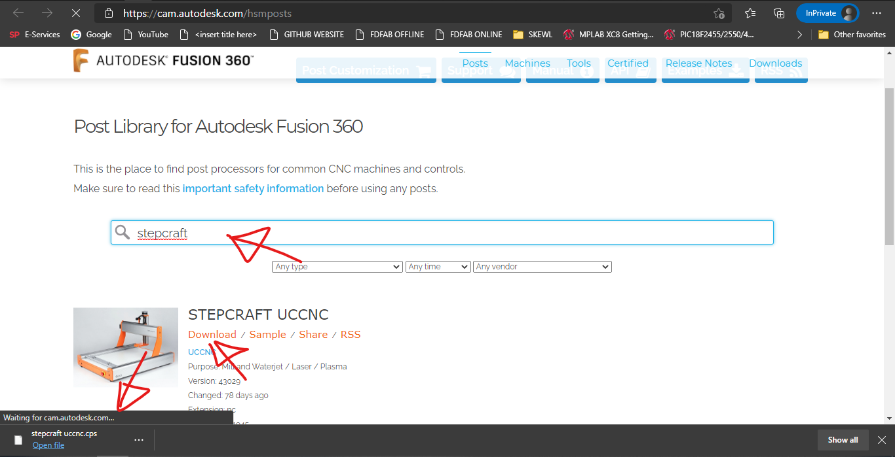
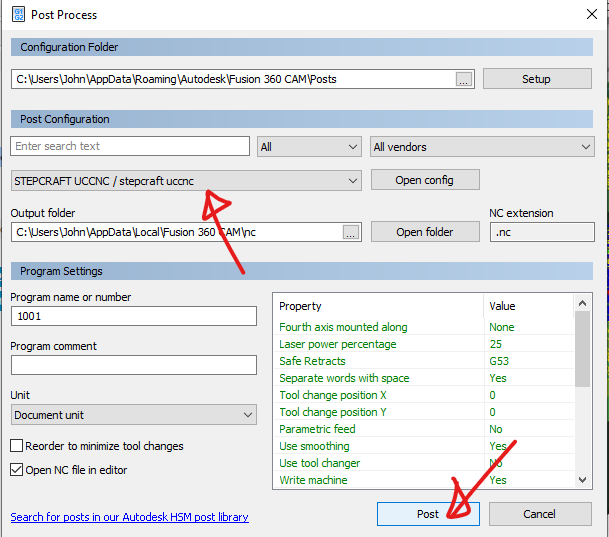

3D Machining
Assignment
For our assignment, we will be 3D machining the mold for our molding and casting process.
Modelling the item to be cast
I first started by modelling the object that I wanted to cast in Fusion 360, I will be making a candle holder:
Before modelling, I used a vernier caliper to measure the diameter of the candle.
I sketched two circles, the inner circle being the diameter of the candle I want to fit inside the candle holder.
The outer circle has a diameter of the inner circle + 2 * 2.5mm which is my desired wall thickness.

I then extruded the inner circle which will where my candle will be sitting on

I followed this by extruding the area in between the two sketched circles to form the wall encompassing my candle

Next, I sketched a simple curving profile

I then used the revolve tool, using the sketch as the profile and the centre of the candle holder as the axis for the profile to be revolved around.
Modelling the mold
Now that I have modelled my candle holder, I'll model the mold. I'll start by sketching a square for a base

I then extruded it by 5mm which will be the thickness of the my base
I then inserted my previously made object as a component, aligning the two centres using the point to point move tool
Next, I sketched the walls of the mold on the X axis, angling their insides, this will make removal of the mold later easier.
I proceeded to do the same for the Y axis

Following that I extruded all 4 profiles to create the surrounding walls.

Now that I have modelled my mold, I can now generate the toolpath for milling it.
Generating the toolpath using Fusion 360 and installing the post processor
We'll head to the manufacturing tab of Fusion 360, click on the design box and it'll open a drop down menu, click on the word manufacture to select the manufacturing tab.
We will also need to install the StepCraft Post Processor, head to https://cam.autodesk.com/hsmposts and search for "Stepcraft"
We'll hit download which will download the stepcraft.cps file.
In manufacturing, we'll begin our setup process since we need a valid toolpath in order use the post processor.
We'll check the appropriate settings for our set up, for instance, our model which we want to mill out.
Something to note when viewing the simulation of the raw toolpath in Fusion 360 is that not all tool collisions are 'real'. Here's an image of the tool library screen:
As can be seen, the 3mm flat end mill only has a flute length of 12mm which is really short. This is the reason why there are so many collisions shown, as long as we ensure the actual flute length is larger than what we want to cut.
In order to obtain our .nc file which we can run on our stepcraft autorouter, we'll need to run our toolpath through the post processor.
Installing our post processsor
Once in the post processing window, click on the 'setup' button. This will open a file explorer window
Click on the file explorer icon to view the address as text, right click and copy the address.
Then open up another file explorer window and paste the address, followed by copying and pasting the .cps file into the folder.
Once that's done, we're done installing our post processor and can now select it.
Hit Post and we'll be able to download our .nc file.
Simulating the toolpath
We can view the raw toolpath in Fusion 360 as shown earlier, but in order to view the .NC file's toolpath, we can either use camotics or NCviewer.
The toolpath is pretty messy and there's better customisation of the view in Camotics so I'll fire it up this time compared to others where I prefer ncviewer due to its simplicity.
Here's an image showing the final state of the material.
Now that I have my .nc file I'll just have to cut the foam.
Milling/cutting the foam
I used the fablab's stepcraft 420 CNC machine, copying my .nc file onto the laptop linked to the machine and loading it using the Stepcraft V2 software, akin to PCB milling.
Clearance
The clearance between the collet and the foam was really small, I should clamped less of the endmill in order to increase the clearance. Luckily for me, there was no collision between the collet and the foam walls.
Phantom Cutting
I noticed some cutting where there was no material. It didn't really affect the end result but increased the time of the cut, in total it took around 2 hours.
The machined block of foam can now be used to create my mold.